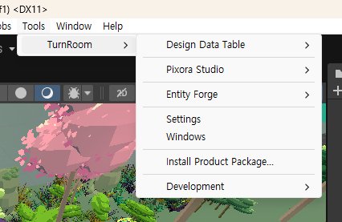
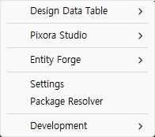
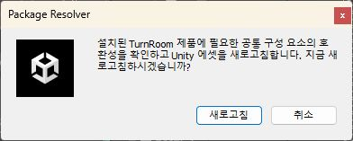

Tracefolio REPORTS & ISSUES
Tracefolio REPORTS & ISSUESWindows 메뉴 제거 및 Package Resolver 전환
검증 대기Windows와 Install Product Package 메뉴를 제거하고 Settings 바로 아래 Package Resolver를 추가했습니다. 팝업은 TurnRoom 전역 언어 설정을 따릅니다.
작업 결과
Unity 실제 메뉴·한국어 팝업·취소·새로고침 확인 및 관련 9개 어셈블리 컴파일 통과.
변경 내용
적용 내용
설치 파일 선택 메뉴를 제거하고 설치된 제품의 공통 구성 호환성 검사와 AssetDatabase.Refresh로 변경했습니다. 사용자 명시 요청에 따라 Unity 기본 다이얼로그를 사용합니다. 기존 프로그램 방식 설치 API와 창 목록 내부 API는 참조 보존을 위해 유지합니다.

Windows와 Install Product Package가 보입니다.

Settings와 같은 구역 바로 아래 Package Resolver를 배치했습니다.

검증
Unity 6000.0.83f1에서 최신 메뉴가 표시됨을 확인했습니다. 취소는 팝업을 닫고, 새로고침은 오류 팝업 없이 에디터로 복귀했습니다. Console 오류 0, 기존 개발 코드 경고 2개. 관련 9개 어셈블리 정적 컴파일 통과 후 최종 공유 어셈블리 재컴파일 통과. 전역 언어 설정을 매번 읽는 구현이며 9개 언어 문구가 있습니다. 실제 시각 검증은 한국어만 수행했습니다. 작업용 메뉴·팝업을 닫았고 기존 Unity 프로세스를 보존했습니다. 사용자 제공 이전 화면과 현재 메뉴는 캡처 배율이 달라 동일 배율 비교 완료로 주장하지 않습니다. 캡처는 원본의 실제 팝업 영역을 저장했으며 이미지 편집은 하지 않았습니다. 교훈 검토: 공유 설정을 우선하는 기존 지침과 동일하여 전역 변경 없음.
남은 사항
영어를 포함한 나머지 8개 언어 실제 전환·오류 분기 UI 및 9개 언어 명암 레이아웃 QA는 미실행입니다. 기존 문서의 다른 과거 QA 상태는 유지합니다.
작업 시간
- 제안 시간: 3~5분
- 실제로 완료된 시간: 2026-11-04 23:59:15 KST 시작. 구현 및 한국어 실제 동작 확인 2026-11-05 00:06 KST까지 약 7분. 보고서 게시 시간은 별도 기록.
- XERJ: 실패 — 이 대화에서 XERJ 시작 실패 확인 후 rg와 현재 소스 직접 읽기로 대체